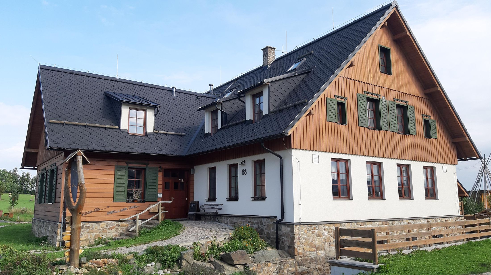

Výlety v okolí
Někde je prostě hezky a tak se třeba jen tak toulám. Za ostrým vzduchem zimního mrazivého dne, bzučením hmyzu na rozkvetlé jarní louce, křemenáči v lesním stínu horkého léta, srnkami na podzimních strništích polí. Výlety do přírody mě osvobozují od starostí všedního dne a nabíjejí novou energií.
Mechové jezírko

Počátek trasy je u penzionu Rejvíz (bývalá Noskova chata) a směřuje po žluté turistické značce směrem na Bublavý potok. U zastavení č. 3 je umístěna terénní stanice stráže přírody s pokladnou. Vybírá se zde symbolický příspěvek na údržbu stezky. Po haťovém chodníku pokračuje 2,5 km dlouhá stezka k Velkému mechovému jezírkuo ploše 1693 m2 a maximální hloubce 3 m. Trasa je značena značkami naučné stezky. Na pěti zastaveních se návštěvník seznámí s bohatými společenstvy rašelinných luk a typickými druhy rozvodnicového vrchoviště. Je přístupná v letní sezóně od května do října. Celé území leží v mělké pánvi, proto voda z okolních svahů stéká dovnitř, kde je zachycována nepropustným podložím. Smrkový les vlivem silného zamokření odumřel a jeho zbytky, které tvoří ochranné pásmo samotného rašeliniště, postupně ustupují prosvětlenému porostu borovice blatky, do něhož je místy vtroušena bříza, olše a jeřáb. Blatka dosahuje výšky 6–15 metrů. Přes svůj malý vzrůst však mají ty nejstarší stromy přes 150 let. Z rostlinných druhů stojí za povšimnutí masožravá rosnatka okrouhlolistá, klikva žoravina, borůvka vlochyně, rojovník bahenní. Z nižších živočichů se zde jako vzácnost vyskytují zástupci arktické fauny – např.šídla, z motýlů žluťásek borůvkový a mravenec rašelinný. Z obojživelníků jmenujme alespoň skokana rašelinného. Kudy z nudy
Rozhledna Zlatý chlumu

Z Rejvízu se vydáme po červené turistické značce na Zlatý Chlum 875 (m.n.m.), který se pyšní kamennou 26 metrů vysokou rozhlednou. Z věže je úchvatný výhled na Otmuchovské jezero v Polsku. Jižní výhled zachycuje celé pásmo Hrubého Jeseníku od Pradědu až k Šeráku. Za příznivého počasí je západním směrem viditelná skupina Kralického Sněžníku a severozápadním Rychlebské hory.
Skalní útvar Kazatelny
Nápadné skalní útvary pod vrchem Kazatelny (925 m) se nachází v těsné blízkosti žluté značky vedoucí z Rejvízu do Videlského sedla v blízkosti Opavské chaty nad údolím Černé Opavy.
Kudy z nudy
Rozhledna Biskupská kupa

Kamenná rozhledna na Biskupské kupě (891 m) je nejstarší rozhlednou v Jeseníkách. Nachází se zde poštovna a ke 110. výročí zahájení činnosti poštovny vzniklo i příležitostné razítko.
Z rozhledny Biskupská kupa je výhled poněkud omezen stromy, ale lze zahlédnout Polsko, vrcholy Nízkého a Hrubého Jeseníku, Zlaté hory a za mimořádných podmínek i Králický. Kudy z nudy
Zlatorudné mlýny

Při cestě ze Zlatých Hor do Ondřejovic, leží malebné Údolí Ztracených štol. Říčka Olešnice zde opouští úzce zaříznutý úsek údolí a po miliony let ukládá zlato do náplavů. Zdejší rýžoviště byla těžena povrchově i hlubinně. Geologové v těchto místech prokázali vysoké obsahy zlata s opětovným nabohacováním. V současné době je v tomto romantickém údolí vybudována replika středověkých hornických mlýnů s naučnou stezkou "Údolí ztracených štol". V mlýnici vám bude předvedeno drcení zlaté rudy a při troše štěstí si kousíček zlata můžete odnést domů. Horský ráz údolí a postavení vodních kol v kaskádě kolmo ke svahu vytvářejí čarokrásné zákoutí. Jako by se zde opravdu čas zastavil. Naučná stezka vás přivede i k místu, "kde voda teče do kopce". Optický klam je na místě tak silný, že pozorovatel jen stěží pochopí umění dávných zlatokopů. Kudy z nudy
Zřícenina hradu Kobrštějn
Hrad Kobrštejn vznikl pravděpodobně koncem 13. století na ochranu zlatých dolů kolem dnešních Zlatých Hor. Koberštejn byl současně pomezním hradem, chránícím vstup na území vratislavského biskupství kolem Černé Opavy, do něhož byl z hradu dobrý výhled. Kdy hrad zanikl, není známo, předpokládá se, že někdy v 15. století.
Koberštejn je opředen pověstmi o zlaté kuželně a skřítcích. Podle pověsti tu prý jednou místní pasáci pomáhali trpaslíkům stavět kuželky, zhotovené ze zlata a stříbra a byli za to bohatě odměněni.
Kde se občerstvit?
Že už jsme toho dnes nachodili dost? Souhlasím. Taky už mám trochu žízeň. Nezajdeme Na Palouček na jedno?
Penzion Rejvíz "Noskárna"
Penzion je typická horská celodřevěná chata. Součástí interiéru jsou řezbářské práce z počátku 20. století, zhotovené původními majitely – bratry Braunerovými.
| Kontakt |
| Adresa: Rejvíz 29, Zlaté Hory |
| Tel.: (+420) 608 877 774 (recepce) |
| Tel.: (+420) 602 730 845 |
| Email |
| Facebook
|
Hotel Franz

Penzion je oblíbeným místem pro relaxační, rekreační, rodinné i aktivní pobyty na horách po celý rok. Pohodlné ubytování je zde nabízeno ve 21 útulných pokojích a apartmánech s celkovou kapacitou 60 lůžek. Součástí penzionu je stylová restaurace s krbem, barem, kuřáckým salonkem a venkovní terasou. Blahodárnou relaxaci vám nabídne komfortní wellness centrum s finskou a parní saunou, Kneippovým chodníkem, whirlpoolem, odpočinkovou zónou a možností koupelí a masáží.
| Kontakt |
| Adresa: Rejvíz 1, Zlaté Hory |
| Tel.: (+420) 602 730 845 |
Chata Férovka

Férovka nabízí pohodlné zázemí pro čtyřicet osob ve dvanácti pokojích. S přistýlkami lze v chatě ubytovat až padesát osob. Pro dobrodruhy a letní akce nabízíme spaní v čundrboudě nebo ve vlastním stanu v blízkosti chaty.
| Kontakt |
| Adresa: Rejvíz 58, Zlaté Hory |
| Tel.: (+420) 608 877 774 (recepce) |
| Tel.: (+420) 602 730 845 |
| Email |
| Web |
| Instagram
|
Na Paloučku

Restaurace Na Paloučku poskytuje říjemné posezení v nekuřácké restauraci s kapacitou 49 osob u stolu, s kachlovými kamny a krbem, venkovní předzahrádku pro 16 osob. Vše za příznivé ceny.
| Kontakt |
| Adresa: Rejvíz 80, Zlaté Hory |
Tel.: (+420) 603 379 122/ |
|
| Email |
| Web |
Zajímavosti z okolí
V okolí Rejvízu se skrývá mnoho dalších zajímavostí. Ať se vydáte kterýmkoliv směrem, čeká na vás spousta nezapomenutelných zážitků.
Vyřezávané židle

Jednu z největších atrakcí má místní restaurace. Ukrývá se v ní totiž sbírka starobylých židlí, na kterých jsou karikatury štamgastů.
Památník Obětem 1. světové války
Kolem Penzionu Rejvíz (Noskovy chaty) vede turistický chodník k pomníku, který byl postaven v r. 1929 na paměť jedenácti rejvízských občanů padlých za první světové války.
28. června se konalo jeho vysvěcení. Je dílem velmi významného předválečného jesenického sochaře Engelberta Kapse.
Pastýř Gill

Rejvíz má také svého dobrého ducha. Bájný pastýř Gill je patronem Rejvízu už stovky let. Objevuje se tradičně s holí v ruce, v potrhaných kalhotách, s pastýřskou mošnou přes rameno a v dlouhé kazajce s kapucí. Kdysi prý místním lidem vyháněl na pastvu ovce a kozy a za to dostával namazané chleby se sádlem. Když jednou dostal suchý krajíc, vztekle ho rozdupal. To pohněvalo vládce hor Praděda a nevděčného pasáčka za to zahnal do rašelinišť.
Pastýř Gill přichází každý rok na jaře na místní slavnost Odemykání mechového jezírka, který se koná k zahájení rejvízovské turistické sezóny.